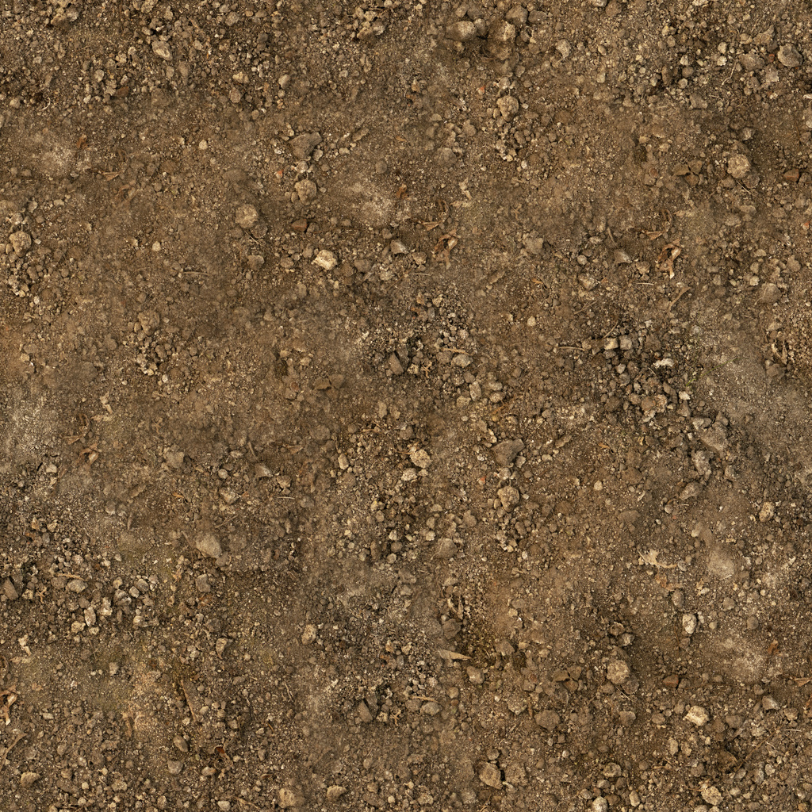
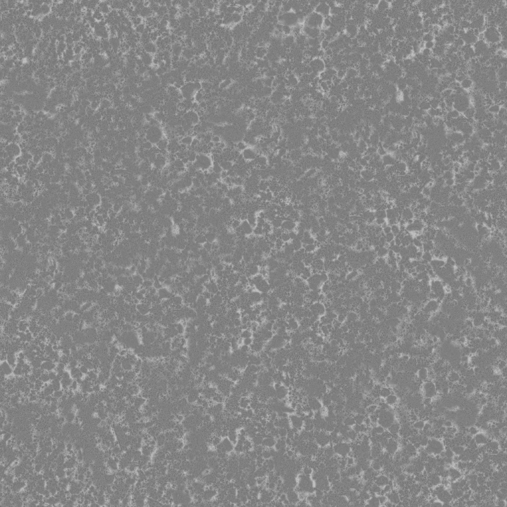
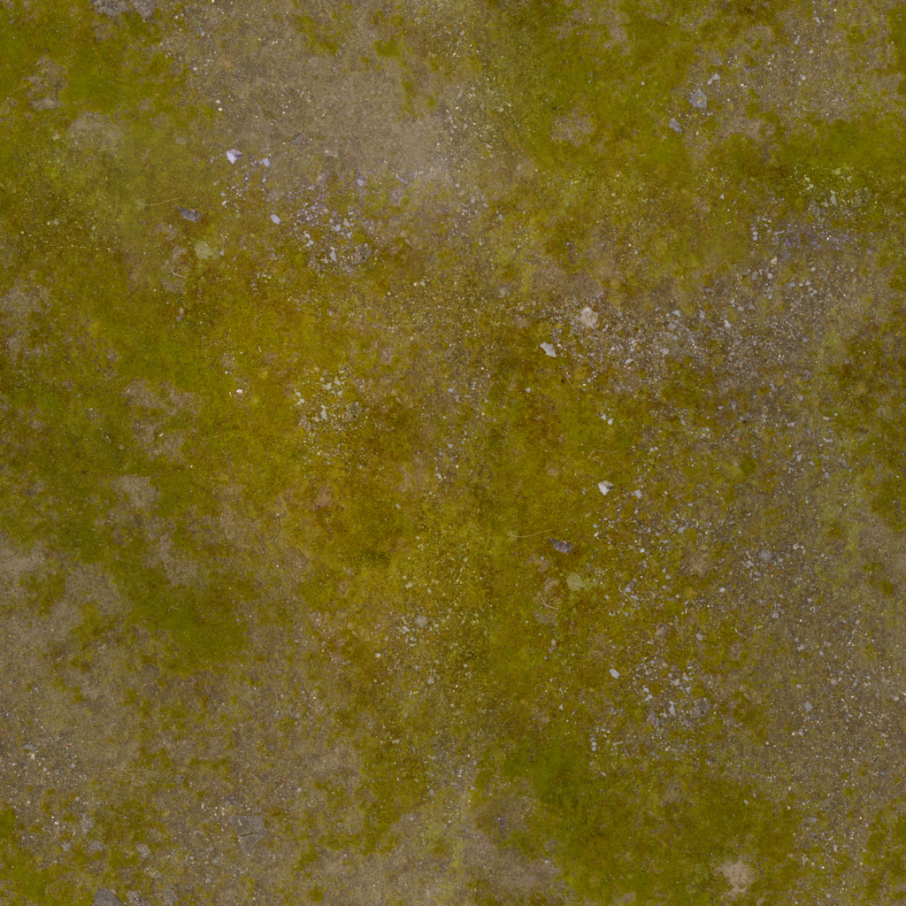
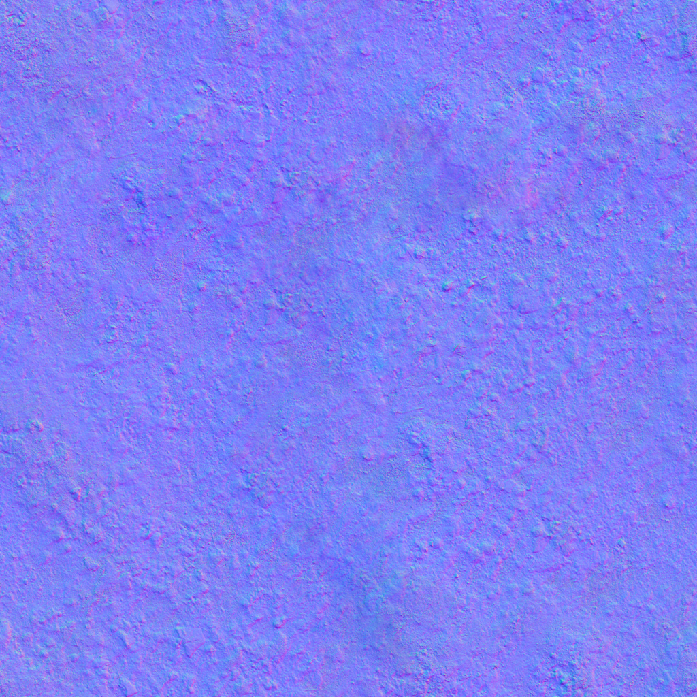
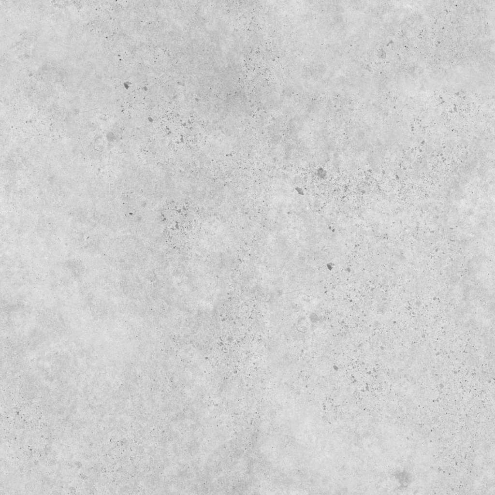

008 / MATERIAL FIELD NOTES
画面的完成度，来自哪些素材？
先分清六件事：轮廓、颜色、表面方向、粗糙度、光照和运动。它们叠加后才成为你看到的土路、车辆与山林。
01 · 一条土路，使用三张不同的图

决定泥土、石子是什么颜色。只贴这张图，也能看到纹理，但不会产生相应的微小表面起伏受光。

蓝紫色不是表面颜色，而是方向数据。改变光的响应，模拟颗粒凹凸；不会抬高路面、改变轮廓或影响车轮接地。

灰度控制高光的扩散。一般更亮更粗糙、更暗更光滑；雨后通过系数降低粗糙度，出现集中高光。
本页使用 Poly Haven 的 Brown Mud Dry，作者 Rob Tuytel，1K JPEG。素材为 CC0。本页没有使用它的位移图，所以细小石粒只改变受光；试验坡道由真实几何高程改变。
02 · 同一组表面，放到山地上



Aerial Grass Rock / Poly Haven，CC0，1K JPEG。地形的高低来自网格顶点，贴图沿地表重复。重复太密会使石粒显得很小，太疏会放大颗粒；这就是第五层“纹理重复”的作用。
03 · 为什么车辆和树木需要模型？
| 对象 | 本页怎样制作 | 它负责什么 |
|---|---|---|
| 观光车 | 独立构建车架、车身、轮胎、轮毂、顶棚、座椅、挡风玻璃与乘客，使用基本几何组合。 | 真实三维轮廓、遮挡与阴影。轮子可以独立转动，车身可以俯仰；“拆开车辆”将部件间距放大供观察。 |
| 松树 | 不规则分层树冠与树干组合，同一份几何通过实例化重复摆放，并改变大小与旋转。 | 远近层次、尺度参照和树影。共用几何减少资源重复，分组布局避免平均撒点的机械感。 |
| 岩石与草 | 扰动多面体形成石块，小片几何形成草丛，按地形高度放置。 | 近景轮廓和地表过渡。贴图中的草与这些立体草丛承担不同的观察距离。 |
| 巡游站、观景台和风车 | 木梁、屋顶、栏杆和标牌等独立几何。 | 让场景有用途和可辨识位置。风车旋转属于动画，不是贴图自带效果。 |
本页没有下载车辆或树木 GLB。程序构建几何便于拆解教学；如果改用美术制作的 GLB，仍然需要材质、灯光、动画与运动逻辑来完成场景。
04 · 素材之外，还需要什么？
| 效果 | 实现方式 | 容易混淆的边界 |
|---|---|---|
| 立体感与接地 | 太阳方向光、天空/地面补光与实时阴影。 | 阴影由几何和光共同产生，不等于颜色贴图里画一块黑色。 |
| 湿润土路 | 降低颜色亮度与粗糙度，叠加雨丝和车后细颗粒反馈。 | 这里是湿润高光，不是完整水膜、积水流动或场景镜面反射。 |
| 雨、扬尘与水花提示 | 线段和带透明衰减的点粒子，按时间更新位置。 | 是视觉反馈，不进行流体或颗粒碰撞计算。 |
| 车身与车轮运动 | 路线高程、速度、曲率决定位置与姿态，轮转来自速度。 | 不在 GLB 或贴图中自动存在；本页为道路辅助运动，不是完整刚体车辆。 |
| 湖面 | 有光照的半透明材质与少量动态亮点。 | 没有平面反射、折射、深度吸收或水流求解。 |
05 · 与参考原作的关系
研究 Mini Moto 的公开发布脚本时，观察到它加载 terrain-v4.png、bike-v3.glb、pine-v3.glb、pit-station-v1.glb 和 course-dirt-v1.png。这说明原作也使用模型与贴图文件；无法由文件名判断资产如何创作，是否经 AI 生成，或采用什么许可。
本页没有复用上述原作资产，也不把自己的构建方式当成原作者的制作流程。参考关系是技术场景和交互思路，而不是素材移植。原作研究日期为 2026-09-14，commit/tag 和素材许可待核实。
06 · 资源账本
本页包含 6 张 1024×1024 纹理，JPEG 文件合计约 4.56 MiB。以每张 RGBA 8 位纹理含完整 mipmap 粗估，六张纹理的 GPU 存储约 32 MiB；这不包含阴影、帧缓冲、几何、驱动开销或其他纹理，也不是显存实测值。
Three.js r185 及 OrbitControls 随项目保存，遵循 MIT 许可证。应用首次加载后不依赖第三方 CDN；纹理实际字节数与 MD5 已记录在清单中。
查看 Three.js 许可证